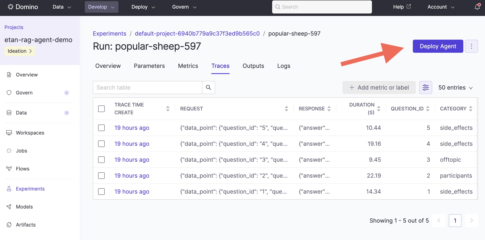

Deploy agentic systems
After experimenting and identifying a promising configuration, deploy your agentic system to production. Agents use the same infrastructure as Domino Apps with configurations tailored for agentic workloads.
Instrument your production app
Before deploying, make sure your production app code includes the @add_tracing decorator on the function that handles user requests. This is what enables Domino to capture traces from live interactions once the agent is running.
A typical production agent is a web app (e.g., FastAPI) where each request passes through a function decorated with @add_tracing:
from domino.agents.tracing import add_tracing
from your_agent import create_agent
@add_tracing(name="single_question_agent", autolog_frameworks=["pydantic_ai"])
async def ask_agent(question):
agent = create_agent()
result = await agent.run(question)
return result
@app.post("/chat")
async def chat(request: ChatMessage):
result = await ask_agent(request.message)
return {"response": result.output}DominoRun is required during development to group traces into experiment runs, but it is optional in production agent code. The @add_tracing decorator alone is sufficient to capture production traces.
For a complete production app with a chat UI, see chat_app.py in the simple_domino_agent repository.
Deploy an agent
You can deploy an agent in two ways:
After comparing evaluation runs and identifying a configuration you want to deploy:
- In your project, from the left navigation, click Experiments.
- Choose the experiment with the agent configurations you're evaluating.
- Select the run you want to launch.
- Click … on the right to launch the run.

A deployment wizard opens, similar to the Apps deployment flow. The wizard pre-fills the code commit from the selected run and prompts you to specify the entrypoint for your agent.
Deploy directly from the Apps view in your project. This follows the standard Publish and share an App workflow, with configuration options specific to agentic workloads.
Once deployed, production traces flow automatically into the agent's monitoring dashboard — the same trace data you saw during development, now captured from real user interactions.